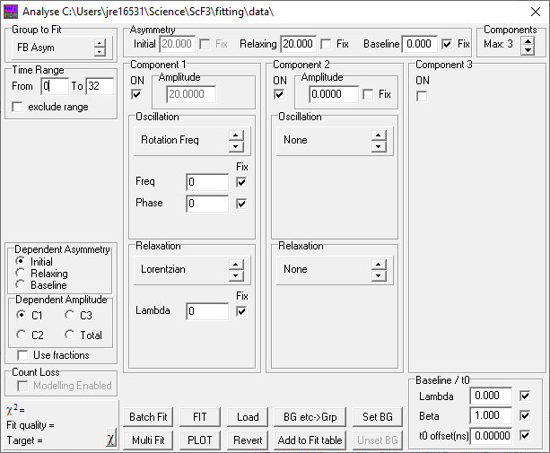
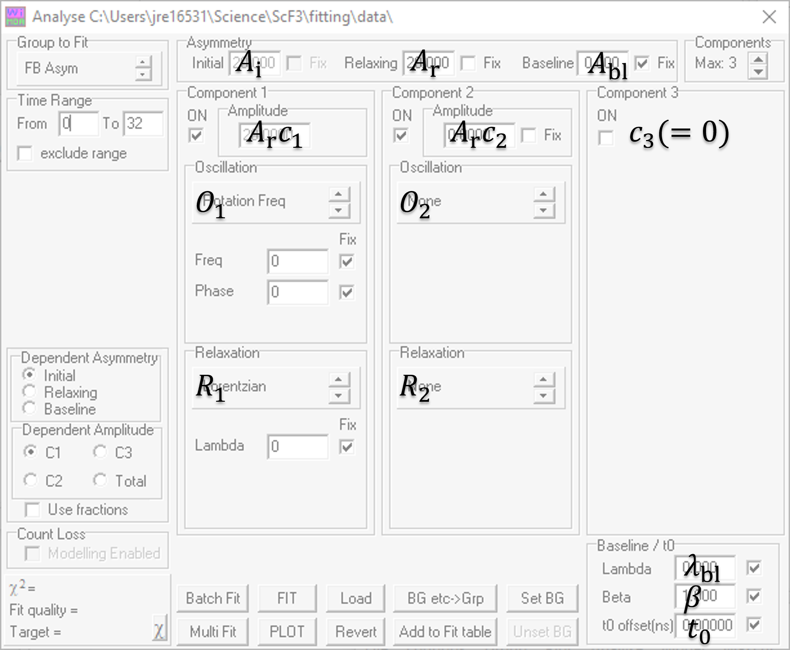

Analyse
The analyse window is used for fitting the muon data in WiMDA. There are several modes of operation, but the most commonly used mode is the fitting of F-B asymmetry.
{kind=link}
Setting Up Asymmetry functions
Overview
The muon asymmetry is usually well modelled by a function of the form
where \(A_{\rm r}\) and \(A_{\rm bl}\) are the relaxing and baseline asymmetries respectively (the initial asymmetry is defined as \(A_{\rm i}=A_{\rm r}+A_{\rm bl}\)). Each component of the sum has fractional amplitude \(c_i\) and is modelled by the product of an oscillating component \(O_i(t)\) and a relaxing component \(R_i(t)\).
The terms in this function correspond to the options in the Analyse window as follows:
{kind=link}
To fit a function of this form, change the ‘Group to fit’ to ‘FB Asym’. Starting values of the initial, relaxing and baseline asymmetries can be set using the panel at the top of the window
Note
Only two of the initial, relaxing and baseline amplitudes are independent variables. The dependent amplitude can be selected using the radio buttons on the left hand side of the window.
The oscillating and relaxing parts of each component of the asymmetry function can be selected by changing the relevant boxes.
Oscillating Functions
The functions available by default are:
Name |
Function |
Notes |
|---|---|---|
Rotation Freq |
\(\cos(2 \pi f t + \phi)\) |
Use for muon spin precession. \(f\) is in MHz, and \(\phi\) is in degrees. |
Rotation Field |
\(\cos(\gamma_\mu B t + \phi)\) |
Use for muon spin precession. \(B\) is in Gauss, \(\phi\) is in degrees, and \(\gamma_\mu\) is the muon’s gyromagnetic ratio (in Mrad/s/Gauss). |
Kubo-Toyabe |
\(G_{\rm KT}(\Delta, B, \nu; t)\) |
Use for a muon interacting with disordered magnetic moments, which have a Gaussian field distribution of width \(\Delta\) µs -1, in a field of \(B\) Gauss and strong-collision model dynamics with hop rate \(\nu\) µs -1. For the functional form, see the muon e-learning resources. |
LF Keren |
\(G_{\rm Keren}(\Delta, B, \nu; t)\) |